인식 결과와 원문의 차이
OCR로 읽은 항목만 보여주면 잘못 인식된 부분을 찾기 어려워요.
Public AX · Gov Service
근로계약서와 현장 사진을 AI가 분석하는 공공 서비스예요. 분석 결과를 그대로 믿게 하지 않고, 사용자가 원문과 비교해 직접 확인한 뒤 점검과 조치로 넘어가도록 흐름을 설계했어요.
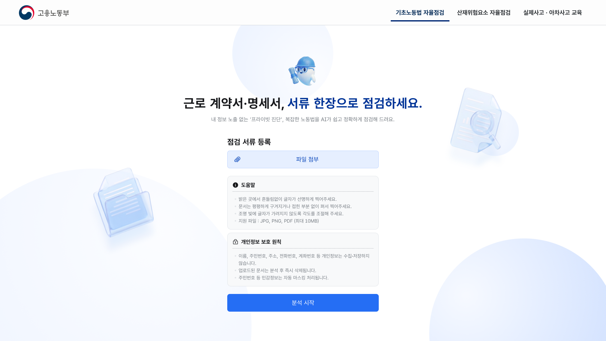
01Context
사용자는 근로계약서와 현장 사진을 올리고, AI가 분석한 위험 요소를 확인해요. 연령과 디지털 숙련도가 다른 사용자가 이 결과를 보고 점검과 조치까지 이어가야 했어요.
OCR로 읽은 항목만 보여주면 잘못 인식된 부분을 찾기 어려워요.
문서 형식·비율·화면 크기가 달라도 같은 방식으로 확인할 수 있어야 해요.
결과를 보여주는 데서 끝나면 무엇을 점검하고 조치할지 알기 어려워요.
설계 관점
자동 분석 결과보다, 사용자가 그 결과를 직접 검증하고 다음 조치를 알 수 있는지가 더 중요하다고 봤어요.
02User Flow
분석 결과 사이에 사용자가 직접 확인하는 단계를 남기고, KRDS 기준으로 익숙한 구조와 분명한 문장을 썼어요.
근로계약서와 현장 사진을 올려요.
OCR로 읽은 항목을 원문과 비교해요.
확인할 내용과 위험 요소를 읽어요.
자율점검과 조치 안내로 이어져요.
03Design Decisions
사용자가 결과를 믿기 전에 직접 확인할 수 있도록, 원문과의 비교와 파일 조건별 동작을 먼저 정했어요.
01
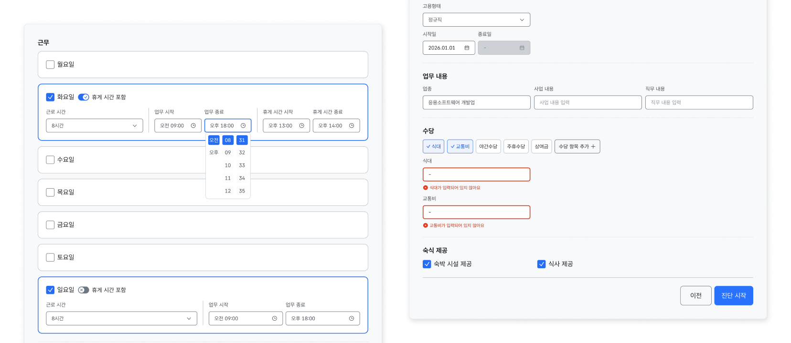
02
03
상하 스크롤을 중심으로 내용을 이어서 확인해요.
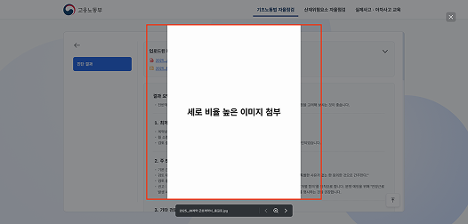
이미지가 잘리지 않도록 영역을 맞춰 전체 내용을 한눈에 봐요.
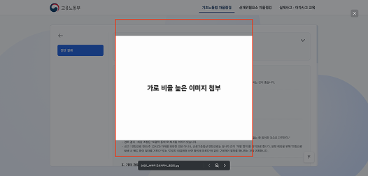
문서 형식을 유지하면서 페이지 단위로 확인하는 뷰어로 보여줘요.
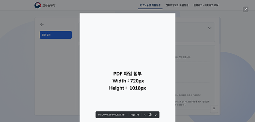
세부 내용을 확대해 OCR 결과를 더 정확히 확인해요.
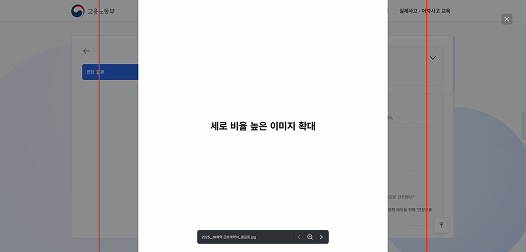
04AI Workflow
실제 사진이 부족한 위험 상황과 작업 환경은 생성 이미지로 보완해, 사용자가 상황을 쉽게 알아보게 했어요.
AI
Designer
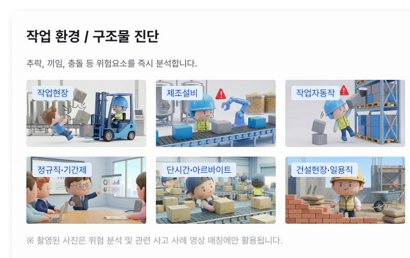
05Key Screens
웹은 메인 홈부터 시작 전 안내, OCR 결과 확인, 진단 결과, 위험 요소와 추천 교육 자료까지, 모바일은 파일 업로드부터 자율점검까지의 흐름이에요.
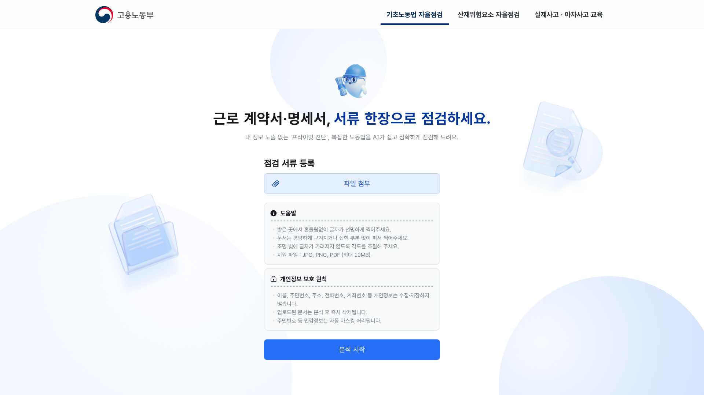
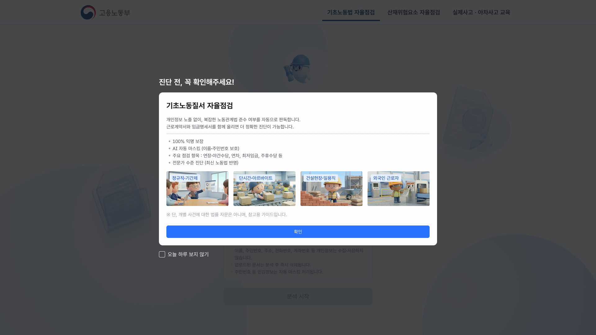
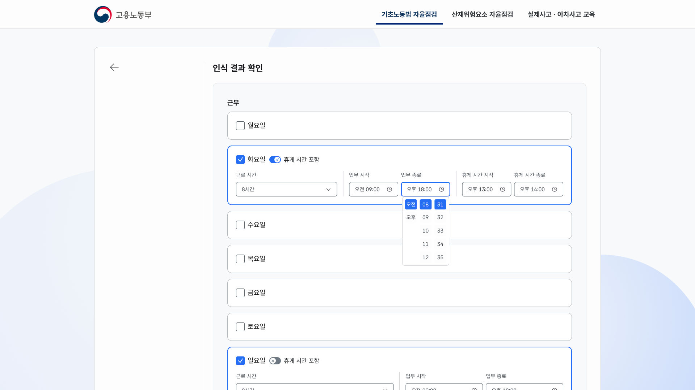
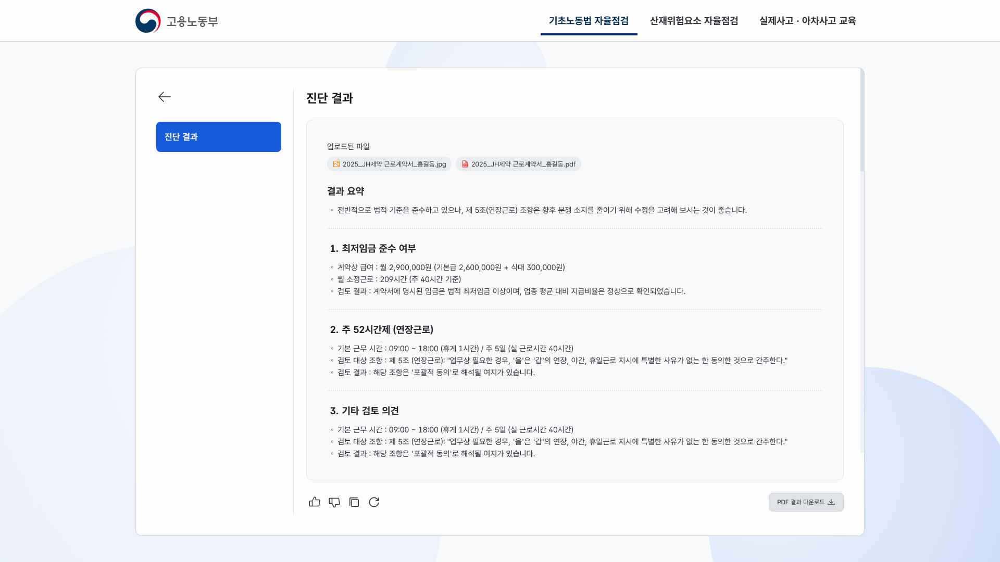
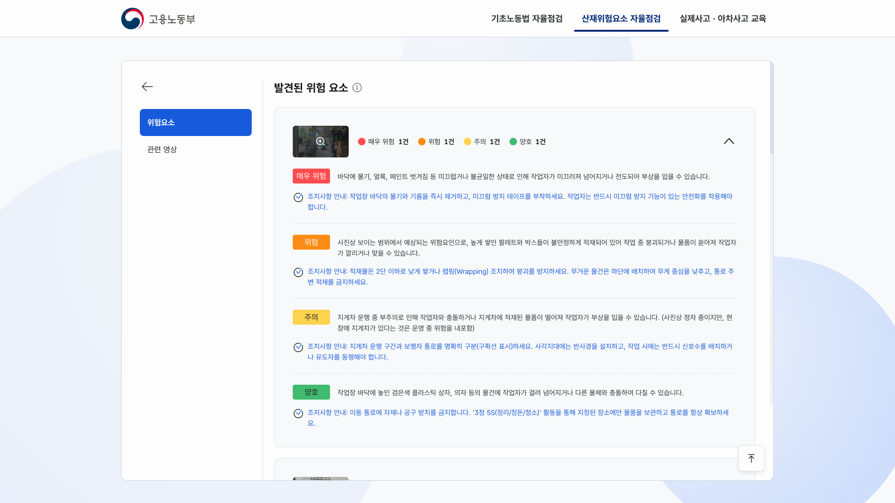
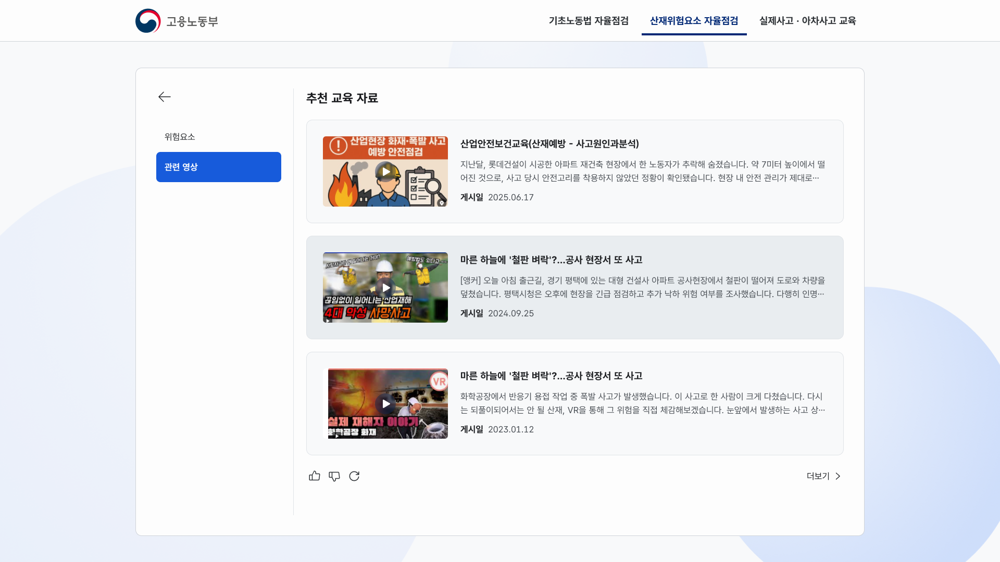
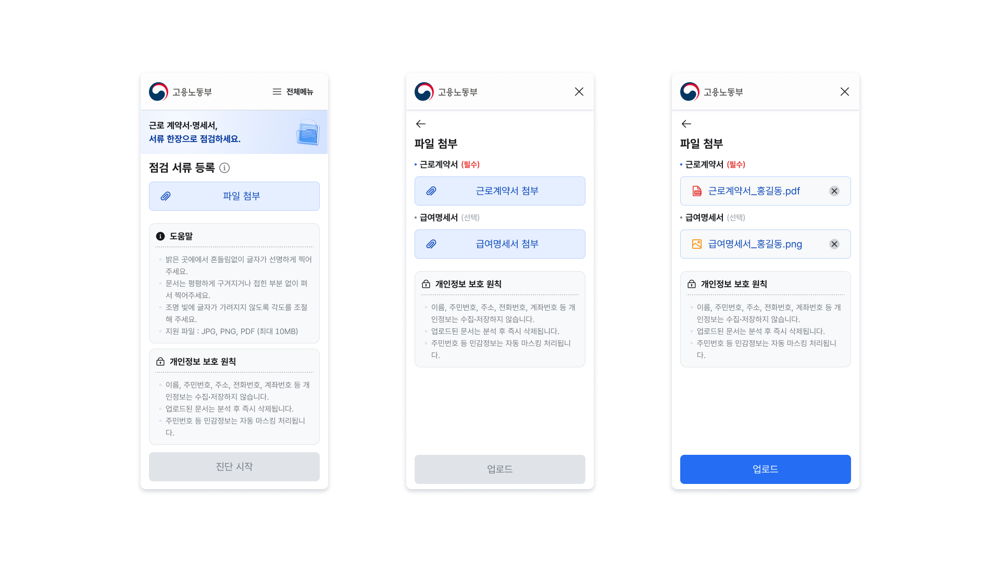
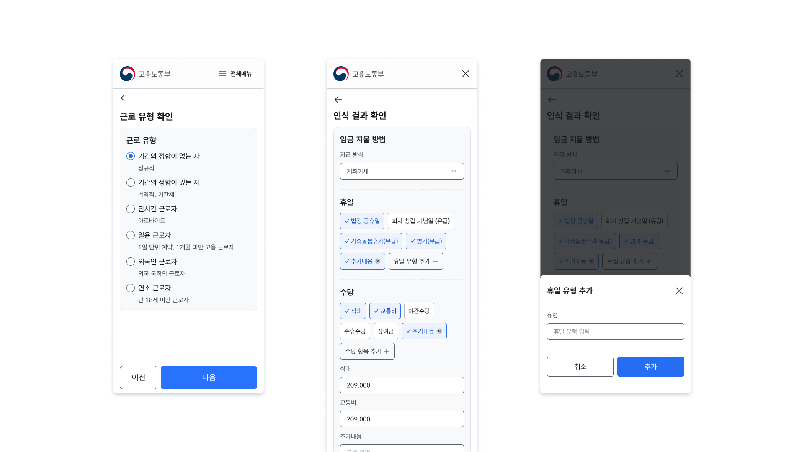
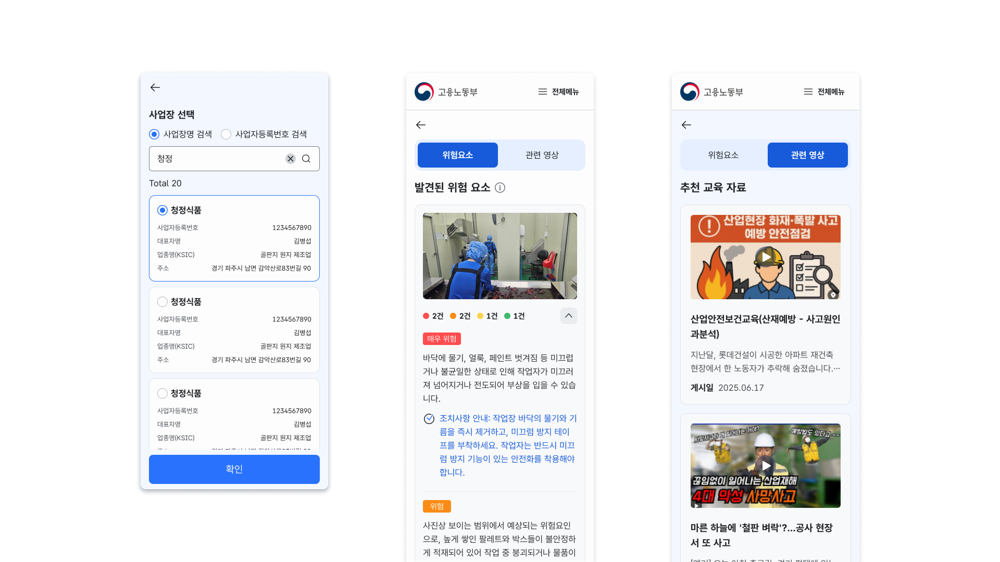
06Result
분석 기능과 사용자의 확인 과정을 연결한 결과예요.
원문과 OCR 결과를 비교해 잘못 읽힌 항목을 사용자가 직접 확인해요.
세로·가로 이미지, PDF, 확대 상태까지 동작을 정리해 구현과 맞췄어요.
업로드부터 인식 결과 확인·분석·자율점검까지 이어져요.
분석 기능을 제공하는 것과 사용자가 그 결과를 이해하고 확인하는 경험은 함께 설계해야 해요. AI가 만든 결과일수록 사용자가 확인하는 단계를 흐름 안에 남긴다는 기준이 생겼어요.